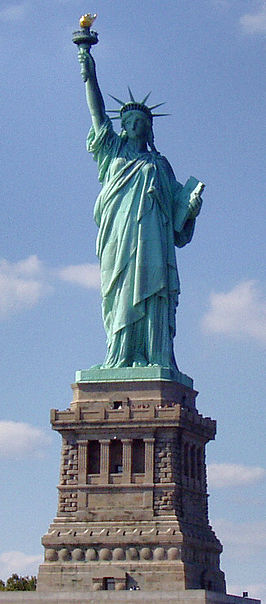

geschiedenis van new york
In 1609 voer de Engelsman Henry Hudson onder de vlag van de Nederlandse V.O.C. naar het gebied dat nu New York Bay heet. Hudson moest eigenlijk een snelle handelsroute vinden naar China, maar hij trof een plek aan waar veel bevers leefden. Omdat beverhuiden in die tijd veel geld opleverden, zetten de Nederlanders daar een bonthandel op.
In 1625 bouwde de West-Indische Compagnie (W.I.C.) een fort op het eiland Manna Hatta, in de monding van de Hudsonrivier, die inderdaad naar Henry Hudson is vernoemd. Dat deden ze om de bonthandel te beschermen. Met de bouw van dit fort was de nederzetting Nieuw-Amsterdam een feit. Nieuw-Amsterdam groeide in 1653 uit tot een echte stad. Het was de hoofdplaats van de kolonie Nieuw-Nederland. Nieuw-Amsterdam kwam in 1674 in handen van de Engelsen, die de stad hernoemden tot New York. Nieuw-Amsterdam werd door Nederland ingeruild voor Suriname en sindsdien was Suriname dus een kolonie van Nederland.
Monumenten
een ander monument dat ook in new york is en heel bekent is
Zoals alle historische gebieden die beheerd worden door de National Park Service, werd ook Castle Clinton National Monument op het National Register of Historic Places opgenomen. Dit op 15 oktober 1966.
Vrijheidsbeeld
het vrijheidsbeeld. Dat is een stanbeeld om een klein eilandje het standbeeld is 93 meter hoog en weegt 225 ton. hij is gebouwed in 1776. het was een geschenk van frankrijk voor het eeuwfeest voor vrede en om een bondte houden met Amirika.

Grant's tomb
Grant's Tomb, formeel bekend als General Grant National Memorial, is de laatste rustplaats van Ulysses S. Grant (1822-1885), de 18e president van de Verenigde Staten, en zijn vrouw, Julia Dent Grant (1826-1902). Het graf werd voltooid in 1897 en bevindt zich in Riverside Park in de wijk Morningside Heights in Upper Manhattan in de stad New York, tegenover Riverside Drive van Riverside Church. Het werd in 1958 onder het beheer van de National Park Service geplaatst.

Castle Clinton
Castle Clinton. De bouw van het fort ving aan in 1808 en werd voltooid in 1811 op het eiland West Battery (soms South-west Battery genoemd), en werd ontworpen door de architecten John McComb Jr. en Jonathan Williams.
West Battery zou Fort Williams op Governors Island, de East Battery, aanvullen om New York City te verdedigen tegen Britse troepen vanwege opgelopen spanningen tijdens de wedloop die leidde tot de Oorlog van 1812. De forten werden echter in geen enkele oorlog ingezet. Door afvalaanplempingen werd West Battery uiteindelijk gelinkt met het eiland Manhattan.